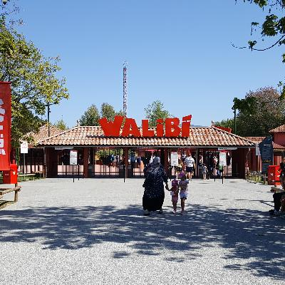
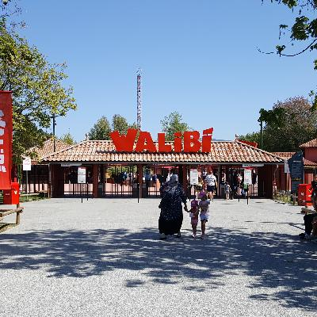
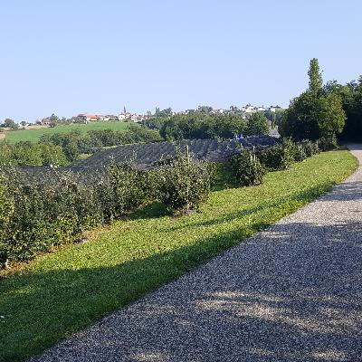
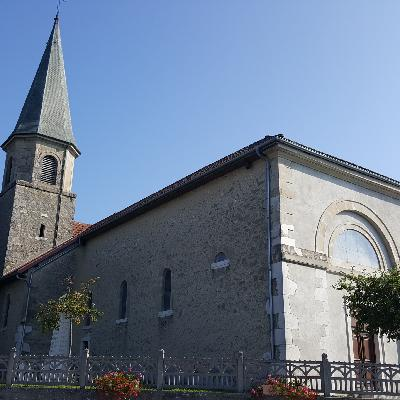
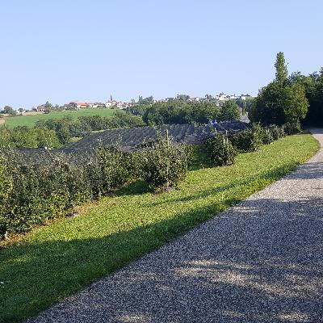
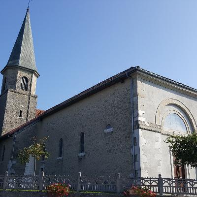

A couple of nice towns along the partially-finished EV-17 route from Lyon to Geneva. Next, a bit of a climb, then Geneva!
Les Avenières
In Les Avenières, I stayed at a delightful little hotel/restaurant. The town itself is nice enough, but there's not a ton to see. That's especially true since I arrived on Sunday, and on Monday most places were closed because it's Monday, or because it's August. It's near an amusement park called “Walibi.”
 

Cæsar had some Gaul
Augustus, in this case: He founded the city of Aoste (originally, Vicus Augustus). This being his month and all, to not have visited would not have been awe-inspiring, majestic, noble or venerable.
Aoste was a center of trade and ceramics at the junction of two main roads up until the fall of the empire, when it fell back to being a minor village. I visited the Gallo-Roman museum there. I also went to the really big Gallo-Roman museum in Lyon (Lugdunum) a few days back. Apparently, Caligula advocated (probably successfully) for the granting of Roman citizenship to the free people in Gaul.
No Queen
Back in Les Avenières, I picked up a publication about a local agricultural fair. It has a cute story about how the fair doesn't have a queen with princesses, because the girls didn't want to compete against their friends. Instead, they declared themselves ambassadors.

Les Avnières to Seyssel
The next bit of riding was up to Seyssel, which is just short of a bit of a climb up to Geneva. Along the way, I ran into several of the dreaded “Canadian barriers” (see the captions on the first few pictures).

Seyssel
Seyssel is a nice, kind of working-class town. The train goes through here, but it doesn't stop (except for a token two trains a day). The town is divided in half by the river, which puts half if it in the Ain département (département number 1; they're assigned alphabetically), whereas the other half is in Haute Savoie. They have two post offices, and I think two mayors.

Seyssel to Geneva
This features a bit of a climb: 300 meters, it looks like, which is about 1000 feet. I don't think it's that big of a deal, but I did arrange for the main climbing part to be at the beginning of the day, after a day of rest, so my legs would be fresh. Of course, this is a bit anti-climatic, since I don't have Wifi here, so I won't be posting this until I get to Geneva!
 



It was a bit of a climb, but no big deal. Actually, I got into Geneva a couple of hours early, a bit before 3!